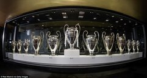
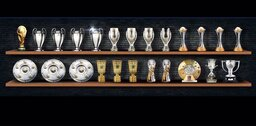

Champion League Trophies
The European Cup was inaugurated in 1955, with Real Madrid winning the first five editions. However, after winning the trophy five times in a row in the 1950s, and again in 1966, the club had little success until the end of the 1990s, apart from their runner-up place in 1981. Since then, Real Madrid has won the competition seven times, in 1998, 2000, 2002, 2014, 2016, 2017 and 2018 and established itself as one of the strongest sides in European competitions, when measured in UEFA coefficients. Zinedine Zidane took over as manager of Los Blancos in 2016. He won three Champions League trophies in a row in 2016, 2017 and 2018.
- 2013-14
- 2015-16
- 2016-17
- 2017-18

